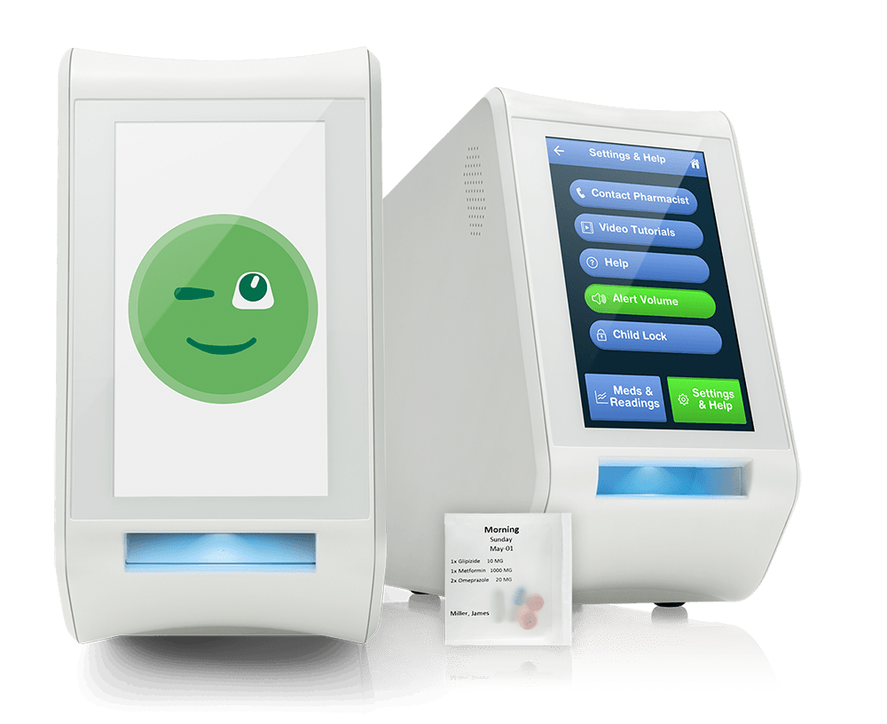
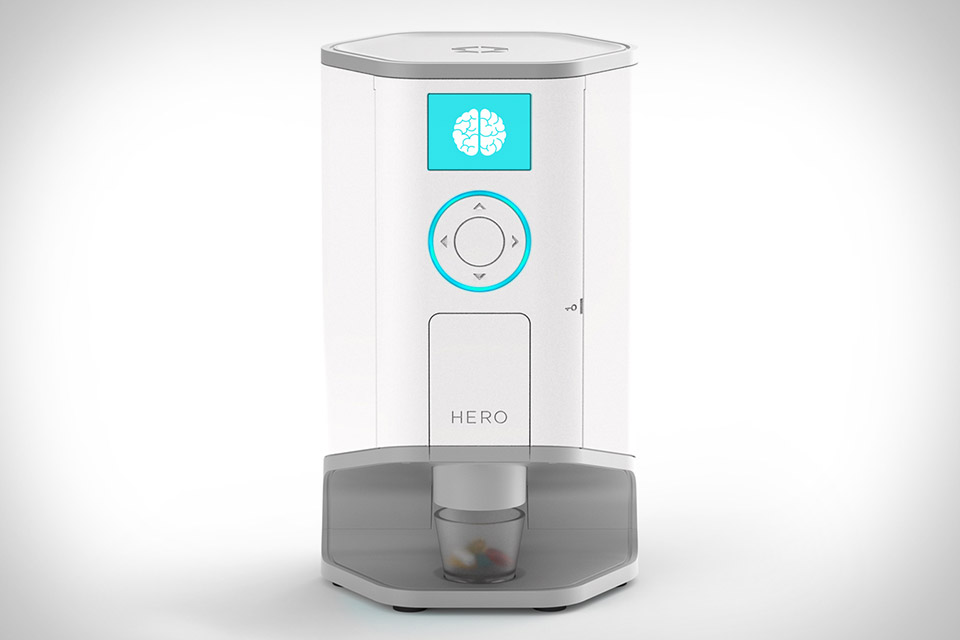

-
About
CapsuleMate is a smart pill dispenser designed to notify a user and dispense the appropriate combination of medications at the correct time. It aims to reduce non-adherence by automating the process of remembering which medications to take and at what intervals.
It is a fourth-year Mechatronics design project out of the University of Waterloo To follow along with CapsuleMate's weekly progress take a look at the blog.
To get in contact with the team email us.
-
Background
The term coined for failing to adhere to a prescription schedule by either missing or neglecting to take medication is non-adherence. Non-adherence is one of the biggest challenges experienced by pharmacists around the globe. In a survey conducted by the Canadian Pharmacists association nearly 30% of Canadians report not taking their medication.
One group where the effects of non-adherence are compounded is the elderly population. Non-adherence is observed for a variety of reasons ranging from lack of belief in the medication to simple forgetfulness. Excluding those with cognitive impairments concerns a notable struggle is that scheduling becomes increasingly complicated when coordinating more than one medication at a time. As a result, there is a need for a device that can automate the sorting and dispensing of pills and set an alert to remind people to take their medication on time.
-
Available Solutions
Spencer:
Con: Requires Blister PacksHero:
Con: $ 400 USD
There are currently many commercial solutions avaiable in the market, from simple plastic pill organizes to complex smart dispensers. However, few attempt to dispense both the correct combination of pills and at the correct time. Or in the case of Hero pictured above are able to do so but for a total cost of $400 USD. In the meantime, people can also rely on their pharamcist to manaully organize their pills for them.